Due: Thursday, October 29, 02:00:00
This assignment covers the material up to lecture 9.
You will be handing in two files for this assignment. There is a third file that you can hand in as well, but you aren't required to.
You should collect the answers to sections B and C into a file called
lab3bc.py. For the questions in section C, you should write your answers
in comments, but write the corrected code outside of comments. Functions in
section C will not be tested (but they will, of course, be graded!).
For section D, you should hand in the file lab3d.py containing your code
for the miniproject. You shouldn't hand in any of the files that your code
generates, or any of the drawings either. We can generate these ourselves.
Similarly, don't hand in the drawing program lab3d_draw.py we provide for
you!
Section E is optional, but if you do the problems there, write the solution
code in a file called lab3e.py. Many of the functions will be modifications
or copies of the functions in lab3d.py; this is OK.
All files should be handed in to csman as usual.
There are a number of supporting files you need to download. They include
test scripts for both lab3bc.py and lab3d.py, called (naturally enough)
lab3bc_tests.py and lab3d_tests.py, the template file for lab3d.py
(described in detail below), the text of two Shakespeare plays (Hamlet and
Macbeth) that you'll use for testing with lab3bc_tests.py, and the drawing
program lab3d_draw.py you'll use with the miniproject. To make this easy on
you, we've collected all of these supporting files into a zip file called
lab3.zip. You should download this onto your computer and
unzip it to get the files you need; ask a TA if you have any problems with
this.
NOTE: Just because a test script works does not guarantee that your code is perfect; the test script may not be comprehensive. You should always test your code by hand (interactively in the Python shell) to make sure it does what you expect. Test scripts are very helpful, but they are not a crutch.
In this assignment, we'll be introducing a new feature in CS 1 assignments: "Honor Roll" problems. These problems are intended for those of you who have more programming experience and would like a challenge. They are optional and do not give you extra course credit. They are indicated by the notation "[Honor Roll]" where the estimated time would usually go or in the section title. Honor Roll problems will each be worth some specified number of "Honor Roll points", which do not count for credit on the assignment or the course as a whole. Therefore, if you aren't interested or don't have the time to do them, you can skip them with no penalty. Your TA will write down how many honor roll points you got for each assignment and then let me know which students got the most points at the end of the class. We will have some prizes for the students getting the most points, and it will also help you if you want to get letters of recommendation from us and/or want to become a CS 1 TA in the future. Plus, the problems are fun!
One other thing about Honor Roll problems: You must do them by yourself! You aren't allowed to ask a TA for help, or to work collaboratively with other students or even non-students. Honor code rules apply. However, you can rework them like any other problem.
Also, if you have an idea for a problem that you think would make a great Honor Roll problem, please send it to Mike.
There are no new Python packages to install this week.
As usual, put docstrings in all of your functions.
[15] Write a function called list_reverse which takes as input a list
and returns the reverse of the list without changing the original list. The
function should use the reverse method of lists in the function body.
Hint: list slices might come in handy.
Examples:
>>> list_reverse([21, 33, 42, 67, 99])
[99, 67, 42, 33, 21]
>>> list_reverse([])
[]
>>> list_reverse([1])
[1]
>>> lst = [1, 2, 3, 4, 5]
>>> list_reverse(lst)
[5, 4, 3, 2, 1]
>>> lst
[1, 2, 3, 4, 5] # no change to original list "lst"
[20] Write a function called list_reverse2 which takes as input a list
and returns the reverse of the list without changing the original list. The
function should use the range function and a for loop (but not the
reverse method of lists). Hint: Consider using the three-argument form of
range — what should the begin point, end point, and step size be?
Examples: same as in the previous exercise.
[20] Write a function called file_info that takes a single input (a
string representing the name of a text file), and returns the number of lines,
the number of words, and the number of characters in the file as a tuple with
three components (line count, word count, character count). Lines are defined
to be sequences of characters ending in a newline character, as we saw in the
lectures. You can use the split method on strings to identify the number of
words in a line. Don't worry about punctuation; "words" here just means a
sequence of characters separated by spaces. The character count should include
the newline characters at the end of each line. Don't forget to close the file
before your code returns. You may assume that the file exists, so that opening
it will not cause an error. You may use the readline function in this
exercise but do not use the readlines function, because this may cause
excessive memory use if the file is very large.
Hint: Use counter variables to store the current values of the three items you're computing.
This function actually does the same thing as the Linux wc program, which
stands for "word count".
Examples:
# Assume that the file 'text.txt' exists and has 1009 lines, 18050 words
# and 102418 characters.
>>> file_info('text.txt')
(1009, 18050, 102418)
[10] Write a variant of the last function called file_info2 which
takes the same input (a filename) and outputs a dictionary containing the line
count, word count, and character count using the keys 'lines', 'words',
and 'characters' respectively. The body of this function should call the
file_info function you just wrote above, capture the results by unpacking the
tuple, package them into a dictionary with the appropriate keys, and return that
dictionary.
Examples:
# Same example as above.
>>> file_info('text.txt')
(1009, 18050, 102418)
>>> file_info2('text.txt')
{'lines': 1009, 'characters': 102418, 'words': 18050}
[20] Write a function called longest_line which takes as input the
name of a text file and returns the length of the longest line of the file, as
well as the line itself (a (length, line) tuple is returned from the function).
Again, make sure your function closes the file before it returns from the
function, and don't use the readlines function. If more than one line has
the longest length, return the (length, line) corresponding to the first such
line. You may assume that the file has at least one line. You should count the
newline character at the end of the line as part of the line.
Hint: The pattern of using an if statement inside a for loop comes
in handy here.
Example:
# Assume that the file 'lines.txt' exists and is at least one line long.
>>> longest_line('lines.txt')
(181, 'This is a really, really, really, really, really, really, really, really, really, really, really, really, really, really, really, really, really, really, almost absurdly long line.\n')
[10] Write a function called sort_words which takes in one argument
(a string), uses the split method on strings to separate it into a list of
words (removing all space characters in the process), sorts the list of strings
(using the sort method on lists), and returns the sorted list of words.
Before you begin, type in:
>>> help(''.split)
>>> help([].sort)
to learn more about the split method on strings and the
sort method on lists. (Also, you should experiment with them in
WingIDE.) The sort method compares strings by their dictionary
order, so 'apple' comes before 'banana'.
Don't worry about punctuation characters in the string; in other words, you
can assume that the split method splits correctly on word
boundaries.
Examples:
>>> sort_words('')
[]
>>> sort_words('foo bar baz')
['bar', 'baz', 'foo']
[15] Convert the binary number 11011010 to decimal. Show how you did it
(using arithmetic; don't write any Python code). Note: Typing 0b11011010
into the Python interpreter will give you the answer, but this is not what we
mean by "showing how you did it"!. What is the largest eight-digit binary
number in decimal? Write the answers as Python comments.
[20] Write a function called binaryToDecimal to take a list of 0s and
1s (representing a binary number) and convert it into a Python integer.
Hint: Don't forget that the exponentiation operator ("to the power of"
operator) in Python is **, so 2**4 is 16.
Examples:
>>> binaryToDecimal([0])
0
>>> binaryToDecimal([1])
1
>>> binaryToDecimal([1,0])
2
>>> binaryToDecimal([1,1])
3
>>> binaryToDecimal([1,0,0])
4
>>> binaryToDecimal([1,0,1])
5
>>> binaryToDecimal([0,0,0,1,0,1])
5
Behavior on invalid inputs (non-lists, or lists of things other than the numbers 0 or 1, or empty lists), is unspecified, so your function doesn't have to handle that.
[Honor Roll] Write a function called decimalToBinary to
take a Python integer and convert it into a list of 0s and 1s representing the
binary equivalent of the input integer. The list must not have any trailing
zeros.
This problem is worth 2 Honor Roll points.
Examples:
>>> decimalToBinary(1)
[1]
>>> decimalToBinary(2)
[1, 0]
>>> decimalToBinary(3)
[1, 1]
>>> decimalToBinary(4)
[1, 0, 0]
>>> decimalToBinary(5)
[1, 0, 1]
>>> decimalToBinary(100)
[1, 1, 0, 0, 1, 0, 0]
Note that doing this:
>>> binaryToDecimal(decimalToBinary(n))
for any integer n should just return n.
In this section we'll look at what's called coding style. There are many ways to write code which works correctly but which are hard to read and understand by others. Beginning programmers, who haven't usually had the experience of reading or modifying a lot of code written by other programmers, tend to have a hard time understanding this. The thing to remember is that even if you're the only one who will ever use your code, you will inevitably want to add new features to it at some point, and then you will have to be able to read the code that you yourself wrote six months, or a year, or five years before. If you can't do that easily, your productivity will suffer because you'll have to waste a lot of time relearning what you meant when you wrote the code originally.
Compared to most programming languages, Python tends to make it easy to write readable code, and over the years of Python's existence, a body of knowledge has accumulated about the best ways to write readable code. Some of the guidelines we use have been written up in the CS 1 Python style guide (posted on the course Moodle page). In this section, we will show you some examples of badly written code and ask you to fix it.
[30] Go and read the Python style guide on the CS1 website. Skip over those sections that deal with features of Python we haven't discussed yet in class. Note: there is nothing to hand in for this exercise.
What are the style errors for the following snippets of Python code? Write down what the style error(s) is/are (in comments) and write a corrected version (not in comments). You can ignore style errors relating to docstrings (missing or present). You can also ignore style errors relating to the content of comments (i.e. whether what they say is relevant or meaningful) but not on their grammar or formatting.
[15] This example has three different kinds of style mistakes.
def sc(a,b,c):
return a*a*a+b*b*b+c*c*c
[20] This example has four different kinds of style mistakes.
def sumofcubes(argumenta, argumentb, argumentc, argumentd):
#reutrn sumof cubes of argsa b c &d
return argumenta * argumenta * argumenta + argumentb * argumentb * argumentb + argumentc * argumentc * argumentc + argumentd * argumentd * argumentd
[10] This example has two different kinds of style mistakes. They are somewhat less severe than the style mistakes seen so far, but they are style mistakes nonetheless.
# 2 different kinds of style mistakes:
def sum_of_squares(x, y):
return x * x + y * y
def sum_of_three_cubes(x, y, z):
return x * x * x + y * y * y + z * z * z
In this week's miniproject, we'll be exploring a fascinating topic called L-systems. An L-system is a string rewriting system (we'll explain what this means below) that can also be used to generate arbitrarily complex images. L-systems were invented by the biologist Aristid Lindenmayer as a way of modeling the processes involved in plant development. L-systems can also be used to generate self-similar ("fractal") images, which is what we'll be doing here.
This will also be our first encounter with computer graphics in the course. Fortunately, you won't have to write the code that does the actual drawing; it will be provided for you. Instead, you will be writing the code that generates drawing instructions and saves them to a file. This allows us to concentrate on the interesting parts and leave the gory details of graphics for later (don't worry, we will cover those details later!).
Before we describe the project itself in detail, we have to cover some background material. Do not skip this! You absolutely need to know this before writing the code for the project. If you do skip right to the problem description, we can almost guarantee that you will waste way more time than you save. Also, as Douglas Adams would advise, don't panic! Just because the description below is long doesn't mean that the code you need to write is long. In fact, there are only six functions to write, and none of them needs to be longer than about 20 lines.
Images will be drawn on the screen for this project using a system called
turtle graphics. This was originally used in the
Logo
programming language in the 1960s and has been ported to many other programming
languages, including Python. A good reference for turtle graphics is the
Wikipedia page, and the
Python turtle module is documented
here. (Note that the
documentation refers to a graphics system called Tk. We will learn all about
Tk later on in the course, but you don't need to know anything about it now.
Also note that Python supports a number of graphics systems that don't require
or use turtle graphics; it's only one of many ways to do graphics.)
The basic idea of turtle graphics is to have a window on your computer screen which is a "canvas" which can be drawn on, and a "turtle" which is a moving "pen" that can draw lines on the canvas. The "pen" can be up or down; if it's up it doesn't draw when it moves, and if it's down it does. The pen has a location, given in (x, y) coordinates; this location starts at (0, 0), which is in the exact center of the drawing window. The pen also has an orientation, specified in degrees from the horizontal. An orientation of zero degrees means that the pen draws horizontally to the right, an orientation of 90 degrees means that the pen draws vertically upwards, and so on. The position and orientation of the pen can be changed by commands. So to draw a square box 10 units on a side, you could issue these commands:
# Assume that the pen is down.
forward(10)
right(90) # degrees
forward(10)
right(90)
forward(10)
right(90)
forward(10)
right(90)
You could substitute left for right in the code above, and it would
also work. You can also go to a particular location on the screen (in terms of
its x and y coordinates) using the goto function. That's basically all
you need to know about turtle graphics for this project. In fact, the actual
Python code that uses the turtle module has been provided for you (see
below), so you won't have to write Python code that has all kinds of forward,
left and right commands. (We want you to understand how it works,
though.)
An L-system ("L" stands for "Lindenmayer") is a way of describing a structure (typically an image) using strings. You start with an axiom, which is the starting string, and a set of rules for converting strings into new strings. The way this conversion works is that some of the letters in a string have corresponding rules that say what they should be replaced by. To find the next version of a string, take each letter of the string, and if it's the left-hand side of any rule, replace it (in the new string) with the string which is on the right-hand side of the rule; otherwise, simply copy it to the new string. You can repeat this process to generate yet another string, and keep going or stop at any point. We'll assume that a particular character can only occur as the left-hand side of at most one rule.
In addition to generating new strings, the characters in a string can be interpreted as simple drawing commands. Successively-generated strings will typically generate ever more complex drawings. The drawings are what we're really interested in creating.
An example is worth a thousand words, so here's an example. We're going to draw what is called a Koch snowflake. This will be one of the drawings you'll be making as part of the project, so pay attention! :-)
The Koch snowflake will be represented as an L-system by strings containing three characters: "F", "+", and "-". Each of these characters is a simple turtle graphics drawing instruction: "F" means to go forward one unit (the size of the unit is not important), "+" means to turn the turtle 60 degrees to the right, and "-" means to turn the turtle 60 degrees to the left. The axiom (initial string) is "F++F++F". If you think about it, what this does is to draw an equilateral triangle one unit on a side: "forward one unit, right 60 degrees, right another 60 degrees, forward one unit, right 60 degrees, right 60 degrees, forward one unit" and the turtle ends where it began. If you drew it out, it would look like this:
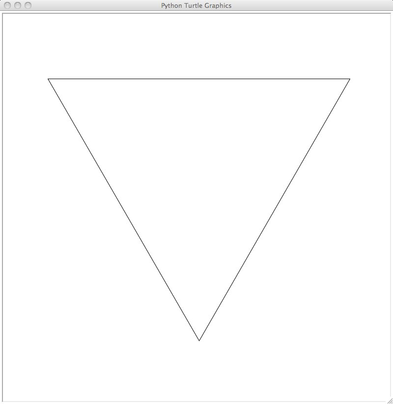This is a pretty simple image, but the essence of L-systems is that they contain rules for transforming simple images into more complex ones. Furthermore, these rules work at the string level, not directly at the image level. You specify these rules by specifying a particular character and what it gets transformed into. There is only one rule for the Koch snowflake, and it is this: the character "F" gets transformed into the string "F-F++F-F". Any other character in the string (for example, "+" or "-") is just copied into the new string. So let's see how the original string would get transformed:
starting string: "F++F++F"
rule: "F" --> "F-F++F-F"
next string: "F-F++F-F" + "+" + "+" + "F-F++F-F" + "+" + "+" + "F-F++F-F"
--> "F-F++F-F++F-F++F-F++F-F++F-F"
Notice that the "+" characters in the starting string go unchanged into the next string, whereas each "F" character gets converted into the string "F-F++F-F" and then everything is concatenated together to give the next string.
If we use the new string to generate an image like we did for the starting string, we get the following picture (scaled to fit in the same size window):
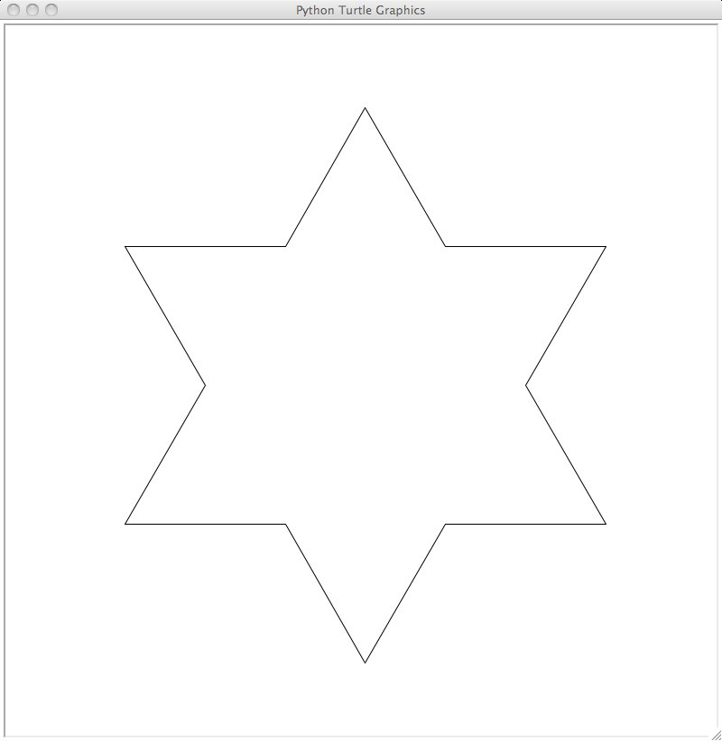Notice that each edge of the original triangle has been replaced by four lines. Graphically, the change is like this:
/\
_________ --> ___/ \___
After doing this, we can repeat this process over and over to get new images. Each new image is "bumpier" than the one that preceded it. Here are a few more images in this sequence, all resulting from the application of the exact same rules:
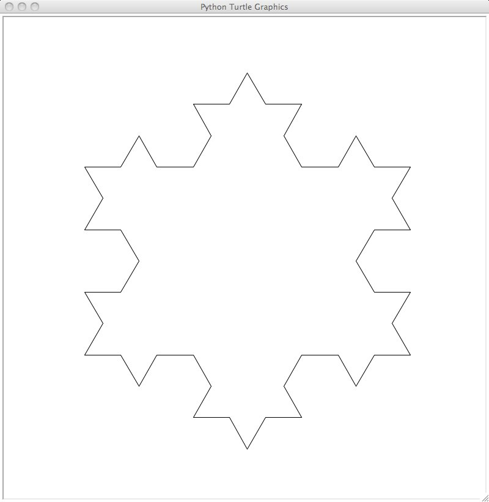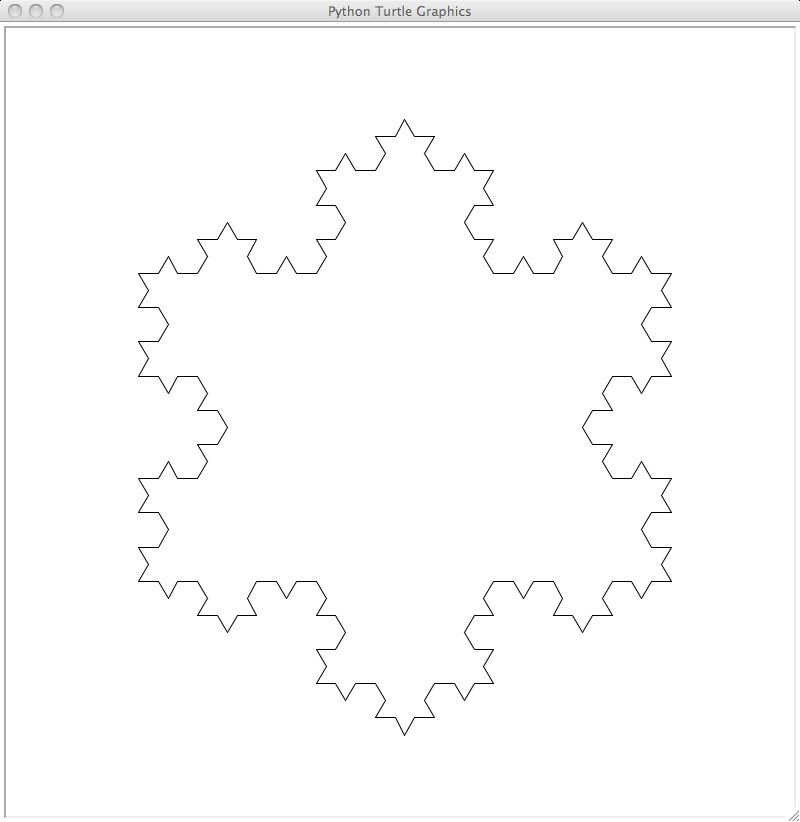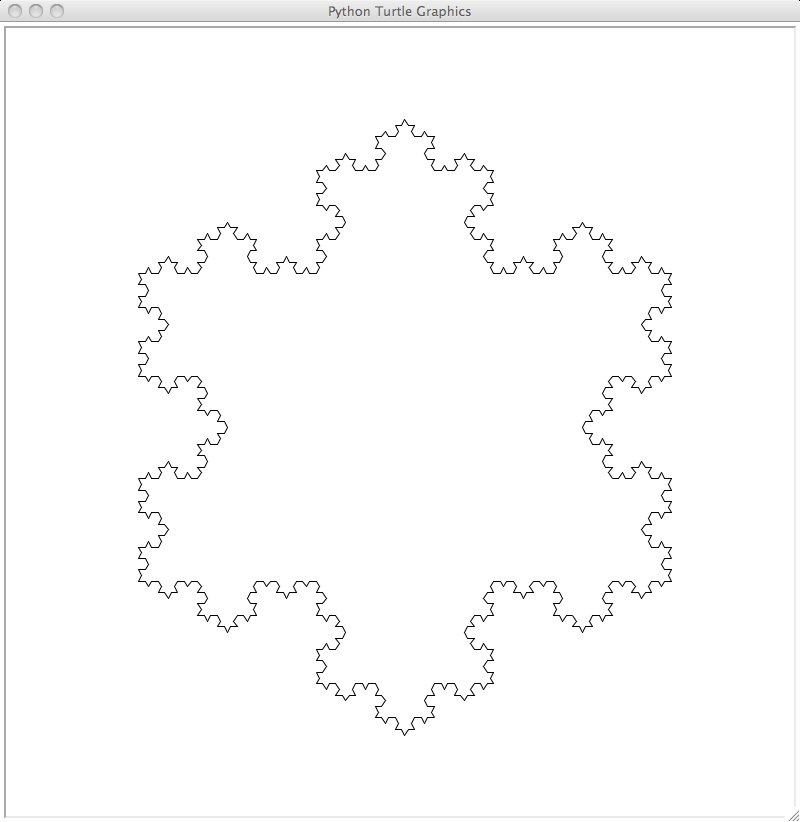Note also that some L-systems (though not the Koch snowflake) include characters that have no drawing action associated with them. These serve as "scaffolding" for the construction of the strings which do include characters with graphics actions associated with them.
It's very important that you understand everything so far. If not, ask a TA for help.
Before getting into a description of the code you have to write, let's take a look at some of the images you'll be generating. The description of each image will include a level number which represents how many times the rules were applied to the starting string to get the image; level 0 means the image corresponds to the starting string, level 1 means that the rules were applied once, level 2 means twice, and so on.
The Hilbert curve is an interesting set of drawings using right angles only. Here are levels 1, 2, 3 and 4:
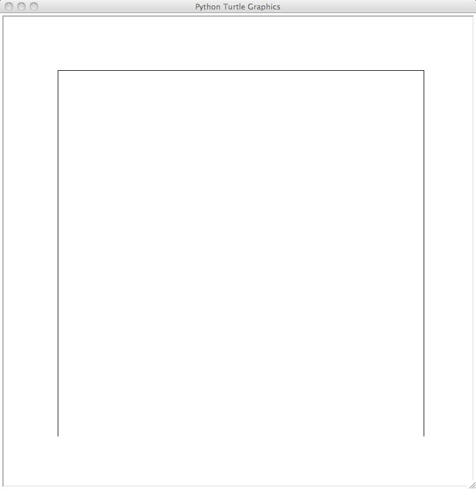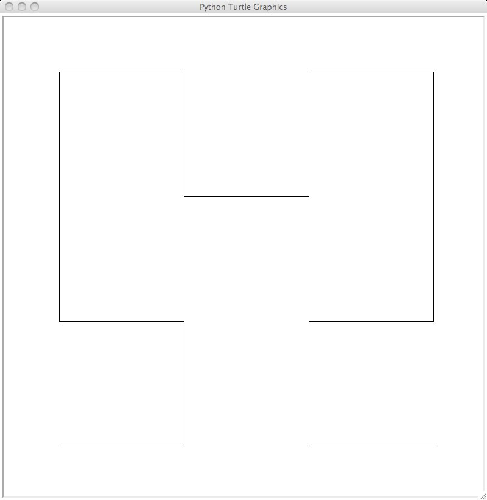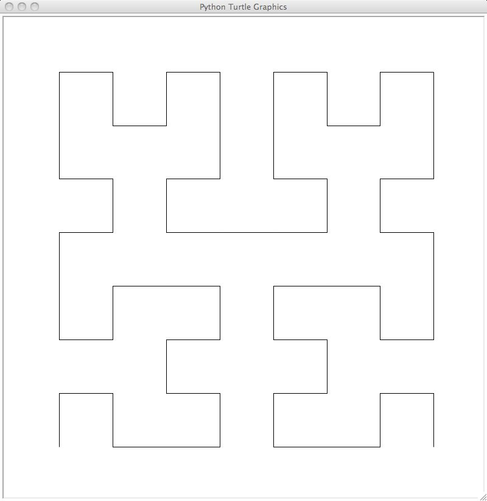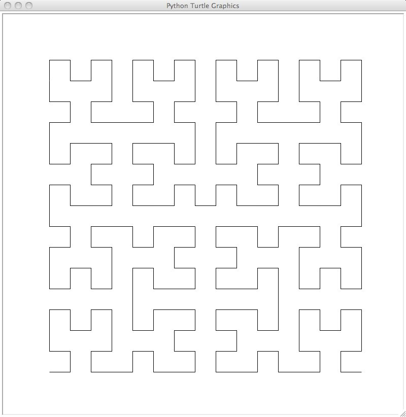The Sierpinski triangle is an interesting set of drawings using triangles. These images are fractals in that the component triangles are similar to the image as a whole. The Koch snowflake and Hilbert curve are also fractals, but it's less obvious. Here are levels 0 to 4:
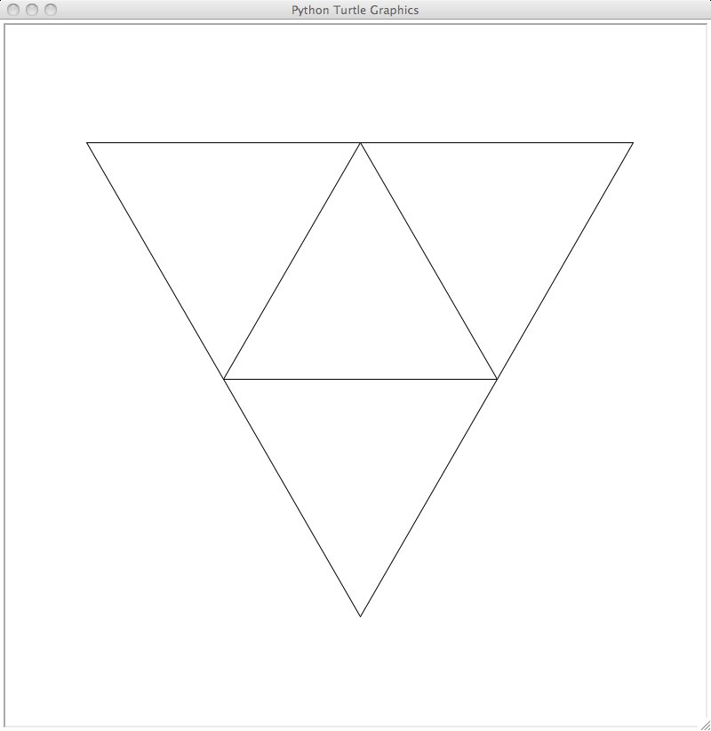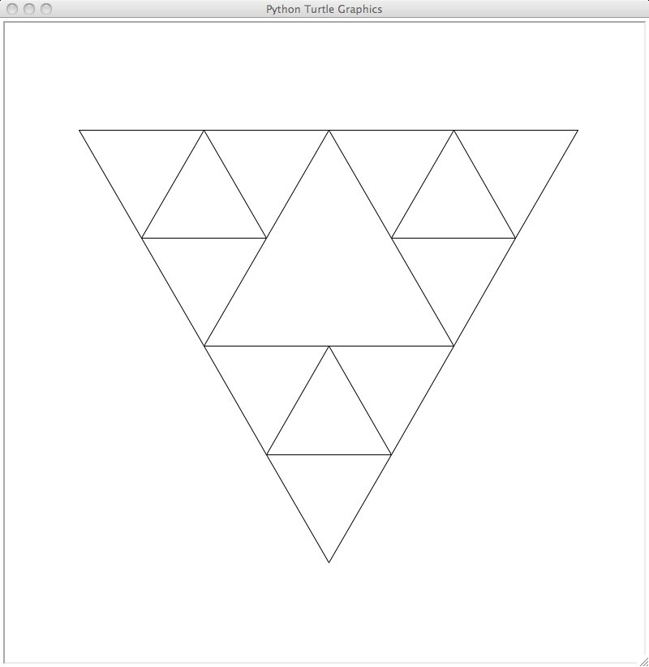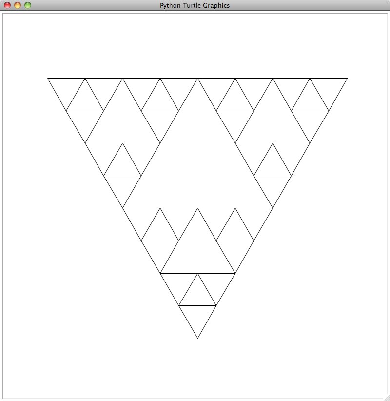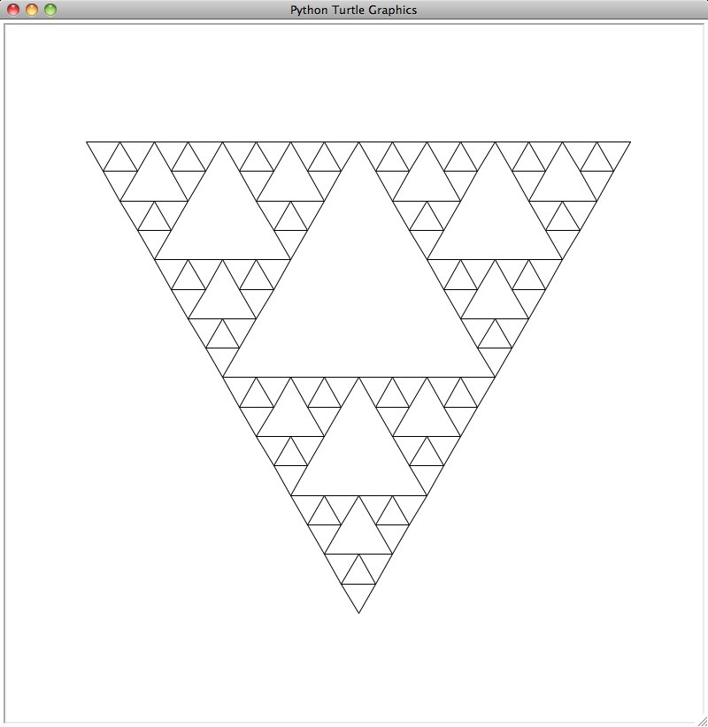OK, enough preamble; let's get to the code you have to write!
To give you a head start, we're supplying you with a skeleton version of the
miniproject code called lab3d.py which is part of the zip file of supporting
files mentioned at the beginning of the assignment. Fill it in with working
implementations of the functions. Do this by (a) writing a docstring (replacing
the text <docstring> in the function) and (b) replacing the line that says
pass with your code. None of the functions needs to be more than about 20
lines long (not counting docstrings), and some can be less than 10 lines long.
One advantage of using the template code is that there are data structures
defined for you in the code that you will need.
Once you've filled in your definitions, running the main() function will
generate a series of drawing files for each of the L-systems in the program
(Koch snowflake, Hilbert curve, and Sierpinski triangle).
Let's talk a bit about how the L-systems are represented in the template code. Each L-system is represented by two different Python dictionaries. One contains the starting string and the rules for the L-system, and the other describes how characters in the L-system string are translated into drawing commands.
Here's an example for the Koch snowflake:
koch = { 'start' : 'F++F++F',
'F' : 'F-F++F-F' }
koch_draw = { 'F' : 'F 1',
'+' : 'R 60',
'-' : 'L 60' }
In the first dictionary, the key 'start' is associated with the starting
string for that L-system (as koch['start']). Then, for each kind of
character in the string that has a rule associated with it, there is a
corresponding key/value pair in the same dictionary. Here, there is only one
rule, corresponding to the character 'F', so that rule says to convert each
'F' character into the string 'F-F++F-F' (which is koch['F']). Of
course, Python strings are immutable so you can't just change them, but you can
create new strings where instead of the original 'F' character you put in
'F-F++F-F'.
The dictionary koch_draw says how to interpret a string in terms of
drawing instructions. There are three types of drawing instructions, each
consisting of a letter followed by a positive integer:
instructions like 'F 1', which means to go forward one unit in the
direction the turtle is currently heading.
instructions like 'L 60', which means to rotate the turtle to the left by
60 degrees. The angle can be any integer between 0 and 360.
instructions like 'R 60', which is like 'L 60' except that you rotate
the turtle to the right.
You'll see how these dictionaries are used in the problems below.
You have to write six functions to complete the project.
[30] Write a function called update which takes two arguments:
a dictionary, which specifies both the starting string and the update rules
for a particular L-system (like the koch dictionary described above)
an L-system string
It will generate the next version of the L-system string by applying the L-system rules to each character of the string and combining all the strings into one big string. Any character which is not a key in the L-system dictionary should be copied into the new string unchanged.
Examples:
>>> koch = { 'start' : 'F++F++F', 'F' : 'F-F++F-F' }
>>> k0 = koch['start'] # starting string
>>> k0
'F++F++F'
>>> k1 = update(koch, k0)
>>> k1
'F-F++F-F++F-F++F-F++F-F++F-F'
# same as:
# 'F-F++F-F' + '+' + '+' + 'F-F++F-F' + '+' + '+' + 'F-F++F-F'
>>> k2 = update(koch, k1)
>>> k2
'F-F++F-F-F-F++F-F++F-F++F-F-F-F++F-F++F-F++F-F-F-F++F-F++F-F++F-F-F-F++F-F++F-F++F-F-F-F++F-F++F-F++F-F-F-F++F-F'
You see that applying the rules to the starting string repeatedly makes the string for this L-system grow pretty quickly!
This function is very short (less than 10 lines). Use the in operator to
test if a character is a key in the L-system dictionary.
[10] Write a function called iterate which takes two arguments:
an L-system dictionary as described in the previous problem.
an integer n which should be 0 or greater.
It returns the string which results from starting with the starting string
for that L-system and updating n times.
Examples:
>>> koch = { 'start' : 'F++F++F', 'F' : 'F-F++F-F' }
>>> iterate(koch, 0) # return starting string
'F++F++F'
>>> iterate(koch, 1) # apply 'F' rule once
'F-F++F-F++F-F++F-F++F-F++F-F'
# same as:
# 'F-F++F-F' + '+' + '+' + 'F-F++F-F' + '+' + '+' + 'F-F++F-F'
>>> iterate(koch, 2)
'F-F++F-F-F-F++F-F++F-F++F-F-F-F++F-F++F-F++F-F-F-F++F-F++F-F++F-F-F-F++F-F++F-F++F-F-F-F++F-F++F-F++F-F-F-F++F-F'
Hints: This function is very easy to write (about 5 lines long) if you use
the update function you just defined to do the string updating. Basically,
you just have to start with the right string and use a loop.
[15] Write a function called lsystemToDrawingCommands which takes
two arguments:
a dictionary whose keys are characters in L-system strings and whose values
are drawing commands (like koch_draw above)
an L-system string
It returns the list of drawing commands needed to draw the figure corresponding to the L-system string.
Examples:
>>> koch = { 'start' : 'F++F++F', 'F' : 'F-F++F-F' }
>>> koch_draw = {'F' : 'F 1', '+' : 'R 60', '-' : 'L 60' }
>>> k0 = koch['start']
>>> lsystemToDrawingCommands(koch_draw, k0)
['F 1', 'R 60', 'R 60', 'F 1', 'R 60', 'R 60', 'F 1']
>>> k1 = iterate(koch, 1)
>>> lsystemToDrawingCommands(koch_draw, k1)
['F 1', 'L 60', 'F 1', 'R 60', 'R 60', 'F 1', 'L 60', 'F 1', 'R 60', 'R 60', 'F 1', 'L 60', 'F 1', 'R 60', 'R 60', 'F 1', 'L 60', 'F 1', 'R 60', 'R 60', 'F 1', 'L 60', 'F 1', 'R 60', 'R 60', 'F 1', 'L 60', 'F 1']
Note that there is no requirement that every character in an L-system string must correspond to a drawing instruction. For instance, the Hilbert curve L-system generates strings with characters that don't need to be drawn; they are just there to make the rules work properly. Those characters can be ignored when generating drawing instructions. Basically, you check to see if a character is in the drawing dictionary, and if it isn't, you ignore it. Otherwise, you add the corresponding drawing command to the list.
This function is very short.
[45] Write a function called nextLocation which takes four
arguments:
x coordinate value of the turtley coordinate value of the turtle'F 1' or 'L 60'It generates the next location and direction of the turtle after that drawing
command has executed. It returns a tuple of three values, the next x
coordinate of the turtle, the next y coordinate, and the next angle. Note
that the x and y values should be floating-point numbers even if the
commands contain integers; that's because (say) going one unit at a 45 degree
angle moves you only about 0.7071 each in the x and y directions. You can
still use integers for the angle, but make sure that it lies between 0 and 360
degrees (the % operator will help here).
This is the only tricky function in the miniproject. You need to do a bit of
trigonometry to calculate the new values. You need to know that Python uses
radians, not degrees, as arguments to the trig functions sin and cos
(which live in the math module, of course). To convert an angle in degrees
to an angle in radians, use this formula:
(angle in radians) = (angle in degrees) * (pi / 180)
pi also lives in the math module.
Hints: Use the split method on strings to extract the parts of a
command (i.e. the letter 'F', 'R' or 'L' and the integer value).
Note that left rotations add to the angle and right rotations subtract from it.
Forward motions require that you compute the x and y changes using
standard trig formulas and the current angle. Your TA will help you if you're a
bit shaky on the trigonometry.
Examples:
>>> nextLocation(0.0, 0.0, 0, 'F 1')
(1.0, 0.0, 0)
>>> nextLocation(0.0, 0.0, 0, 'L 60')
(0.0, 0.0, 60)
>>> nextLocation(0.0, 0.0, 0, 'R 60')
(0.0, 0.0, 300)
>>> nextLocation(1.0, 2.0, 60, 'F 1')
(1.5, 2.8660254037844384, 60)
[30] Write a function called bounds which takes one argument: a
list of commands such as those generated by lsystemToDrawingCommands. It
computes the bounding coordinates of the resulting drawing, which means the
minimum and maximum x and y coordinates ever achieved by the turtle as it
moves to make the drawing. The function returns a tuple of the (xmin, xmax,
ymin, ymax) coordinates, where each coordinate is a float (not an int).
Examples:
>>> bounds(['F 1'])
(0.0, 1.0, 0.0, 0.0)
>>> bounds(['R 90', 'F 1'])
(-1.8369701987210297e-16, 0.0, -1.0, 0.0)
>>> bounds(['L 90', 'F 1'])
(0.0, 6.123233995736766e-17, 0.0, 1.0)
>>> bounds(['R 45', 'F 1'])
(0.0, 0.7071067811865475, -0.7071067811865477, 0.0)
Note that some of the numbers are just 0.0 with tiny roundoff errors; your
code doesn't have to give the exact same numbers, but they should be close (say,
within 0.0001 of the values above). Of course, the input lists for real
drawings would probably be a lot longer.
This may seem to be a difficult function to write, but if you've written the
nextLocation function correctly, it's very easy! You start the x and y
minimum/maximum values off at zero, and then for each command in the list call
nextLocation with the current x, y and angle values and the command.
Use the return values to update the current x and y coordinates and angle,
and use that to update the minimum and maximum x and y values. Once
you're through the list, you'll have the overall minimum and maximum x and
y values, which you can put into a tuple and return.
The reason we need these bounding values at all is so that when we draw the figure corresponding to the list of drawing commands, we can use the bounding values to scale and center the figure so that it looks good. You won't have to do that because it's taken care of in the drawing program you'll use to draw the figures (described below).
[15] Write a function called saveDrawing which takes three
arguments:
a filename to write to
the bounds of the resulting drawing, as a tuple of floating-point numbers
(xmin, xmax, ymin, ymax) (presumably generated from the bounds function
described above).
a list of drawing commands (presumably generated from the
lsystemToDrawingCommands function described above).
This function will write this information to the file corresponding to the
given filename by first writing the bounds information on a single line (as four
floating-point numbers with spaces between them but no parentheses or commas),
and then by writing the drawing commands to the file, one per line. Use the
write method on file objects to write lines to the file. (We haven't talked
about this method in class, but it just writes a string to a file.) Note that
you have to supply the newline character yourself when you use write (it
doesn't automatically supply one for you). Note also that the drawing commands
are already in the form of strings, so writing them to a file is easy. Don't
forget to close the file you open!
Given a bounds tuple of (0.000000, 9.000000, -7.794230, 2.598080) and a
commands list of ['F 1', 'L 60', 'F 1', 'R 60', ...], the output file's
contents would look like this:
0.000000 9.000000 -7.794230 2.598080
F 1
L 60
F 1
R 60
... (etc.)
This function is very short.
The program you should use to display your finished graphics files is called
lab3d_draw.py and is part of the zip file of supporting files mentioned
previously. Assuming that you have a file of drawing commands called
mydrawing, you can draw it in one of two ways:
% python lab3d_draw.py mydrawing
or:
% python lab3d_draw.py -fast mydrawing
The % represents the terminal prompt (yours may be different). You should
run this program directly from the terminal, not from inside WingIDE. Make
sure that you run it when in the same directory as the drawings you want to
display.
The difference between the two ways of running the program shown above is that the first way will draw the drawing one line at a time, and you can watch it as it draws. The second way draws the entire drawing before it displays anything. The second way is greatly superior for drawings that have a large number of lines, since it will take dramatically less time. The first way is more interesting to watch :-)
Another useful feature of the lab3d_draw.py program is that you can use it
to draw multiple drawings, where each drawing's commands comes from a different
file. You do this by specifying the name of each file to draw on the command
line, like this:
% python lab3d_draw.py mydrawing1 mydrawing2 ...
or like this:
% python -fast lab3d_draw.py mydrawing1 mydrawing2 ...
(if you want the drawings to be drawn as quickly as possible). This will
cause each drawing to be displayed in turn; you simply hit the <return> key
to move from one drawing to the next (the program will prompt you to do this).
This can be very convenient when you want to inspect a whole group of drawings.
We've provided a test suite in a program called lab3d_tests.py with the
supporting files. Run these tests to check your code. We don't guarantee that
they will catch all bugs, but if your code passes the tests it's a lot more
likely that it's correct than if it doesn't! Before running the tests, try
running the drawing program described above on your files of drawing commands;
if the drawings look reasonable, run the tests. If not, you can still run the
tests to help pinpoint the problem(s).
The Wikipedia entry on L-systems is a good reference on the topic.
This site allows you to interactively experiment with L-systems in your browser, and it's fun!
For this problem, we are going to extend the L-systems miniproject to handle brackets, which are a new special character that can occur in L-system strings. This entire section should be considered as a single Honor Roll problem (and is thus optional, as mentioned above).
The entire section is worth 4 Honor Roll points. Partial credit will be given for solutions that are partially working. Graders will note the Honor Roll score in the comments submitted for the assignment. This will be the sum of the score for this problem and the score for the previous Honor Roll problem, with a maximum combined score of 6 Honor Roll points.
The L-systems described above are sufficient to generate a lot of interesting images. However, for some applications (notably, for simulating plant structures, which was one of the original motivations for creating L-systems), it's useful to also have the two special bracket characters "[" and "]". These characters don't do anything when the string is being constructed; they don't occur on the left-hand side of any rules, for instance, so they are just copied from one L-system string to the next unchanged. However, they do do something when the string is being used as instructions for drawing. What the "[" character does is save (append) the current (x, y) coordinates of the turtle as well as the angle the turtle is facing onto a list. The "]" character restores the last saved (x, y) coordinates and angle of the turtle by removing the last element from the list (we call this popping a value from the end of the list, and lists used this way are often called stacks) and making the previous (x, y) coordinates and angle the current ones. The bracket characters allow the turtle to go back to a position and orientation where it was previously. When the turtle is restored to a previous position and orientation, a line is not drawn from the last position to the new (restored) position (in turtle graphics terms, the "pen is up" while the coordinates are adjusted, and then the "pen is down" again after the adjustment, so more drawing can resume). We can use the "[" and "]" characters to generate tree-like or plant-like images, and we'll do exactly that below.
We will use the following Python code to represent a plant structure as an L-system:
plant = { 'start' : 'X',
'X' : 'F-[[X]+X]+F[+FX]-X',
'F' : 'FF' }
plant_draw = { 'F' : 'F 1',
'-' : 'L 25',
'+' : 'R 25' }
Note that the 'X' key in the plant dictionary is bound to a string
value that contains the bracket characters '[' and ']'. We'll use this
L-system as our example of using brackets in L-systems.
Here are some plant pictures generated by using the plant L-system, from levels 1 to 6:
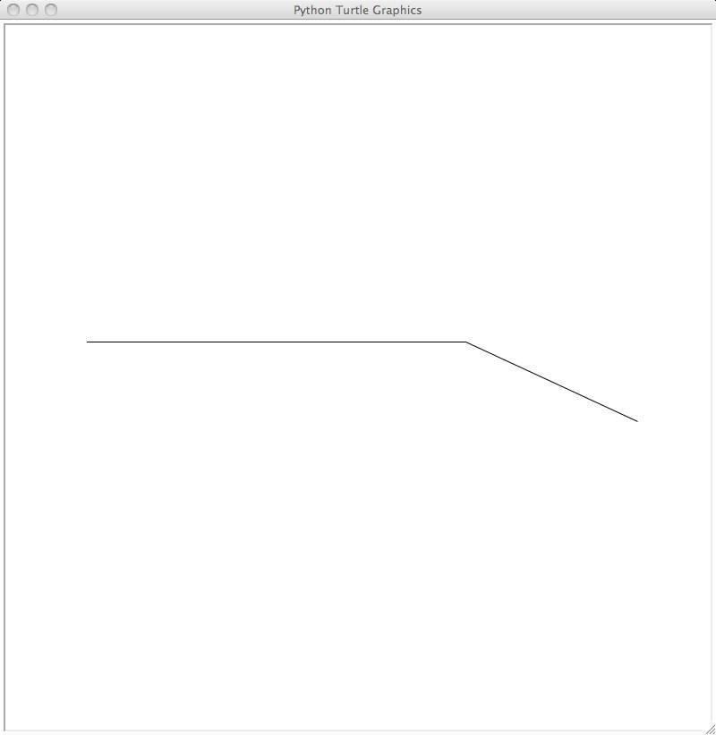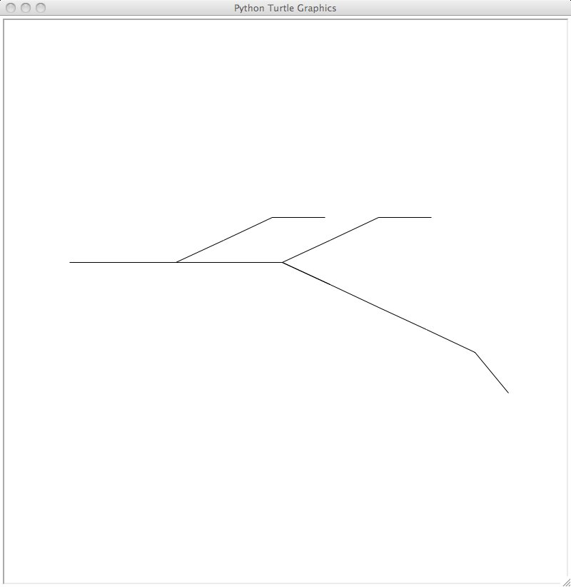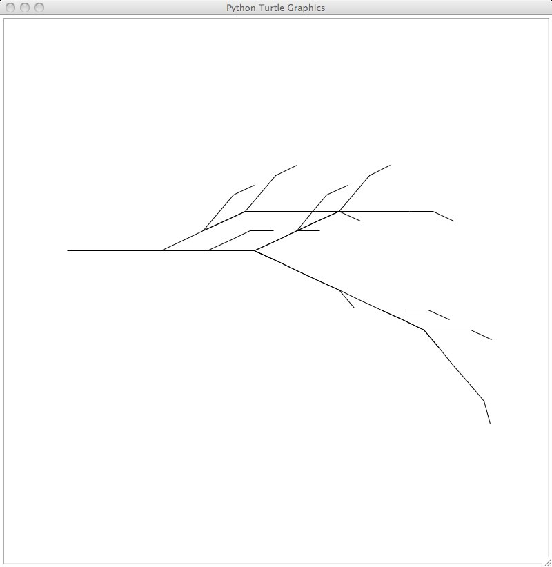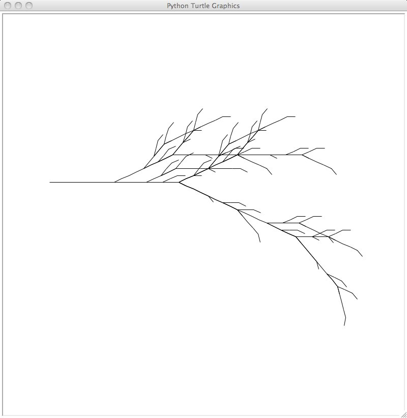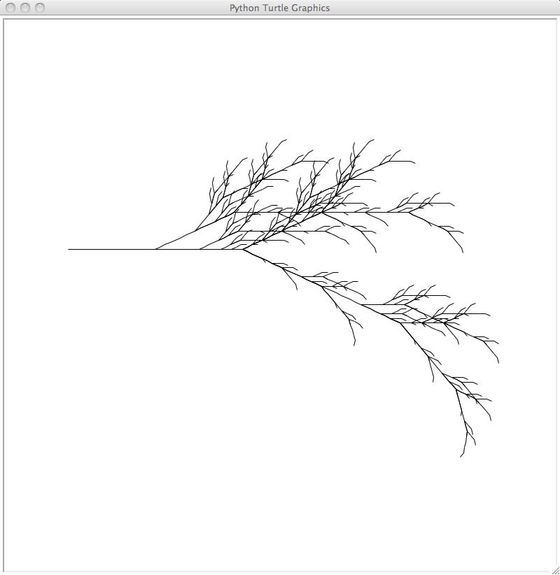You need to modify the code from the last section so that it can work with
the plant L-system as well. (Please don't change the code in lab3d.py that
you will hand in; instead, copy it to a new file called lab3e.py and modify
the copy.) This is actually not that hard. Of the six functions you wrote for
the miniproject above, you will only need to modify these ones:
lsystemToDrawingCommandsnextLocationThe interface (number and name of arguments) of these functions should be
unchanged. Of course, include all the other L-system functions as well; your
submission (the file lab3e.py) should be self-contained and it should be
possible to generate the plant drawing files shown above just by running the
program from the command-line.
The drawing commands generated by the L-system code need to be extended to
handle the brackets. A left bracket will save the current location in an
internal data structure (appending to the end of a list works well), while a
right bracket will remove the last saved location (popping from the end of a
list using the pop method on lists works well) and output a "goto"
instruction, which has this format:
G <x> <y> <angle>
where <x>, <y>, and <angle> are floating-point numbers representing
the saved x-coordinate, y-coordinate, and angle with the horizontal,
respectively. Angles should only be in the range [0, 360) degrees.
Note that any list used for saving/restoring locations/angles should be a
local variable of a function, not a global variable. Note also that we don't
specify the '[' or ']' characters as keys in the plant_draw dictionary,
because there is no uniform mapping between these characters and specific
drawing commands (the '[' character doesn't generate any drawing commands,
and the ']' character generates a G command whose parameters depend on the
last saved location).
The code for this problem (other than test code) should be collected into a
file called lab3e.py, which should be a stand-alone Python program that can
be run from the (terminal) command line.
Once you've written your code, you should check that it can generate the
above figures. Use the lab3d_draw.py program to draw your pictures; this
program understands the G syntax for "goto" instructions. You're also free
to write nose-style tests if you like; if you do this, you can use the tests
in this assignment as a template.